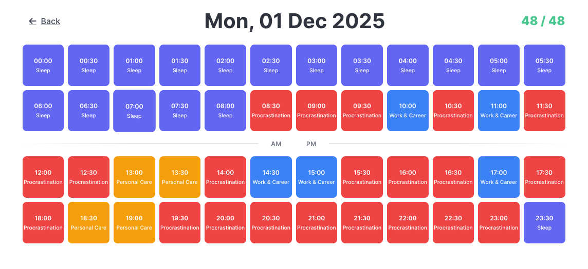
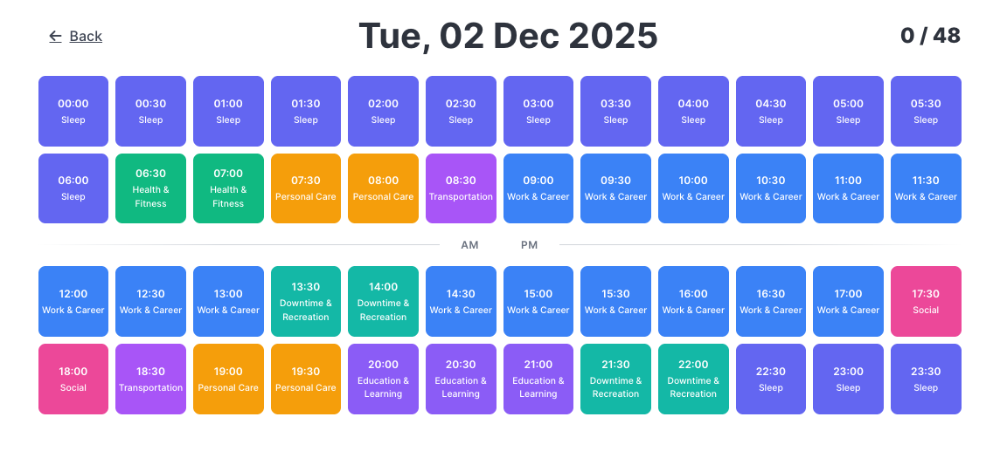

A simple time tracking app built to help break the cycle of procrastination through honest self-awareness. Like counting calories reveals your diet, tracking your time reveals your habits. Try it at procrastinoid.com.
I built this during my own period of procrastination when I realized detailed schedules weren't working - they showed what I planned to do, not what I actually did. Procrastinoid creates a historical record of how your time was actually spent.
Every day is divided into 48 blocks of 30 minutes. You categorize what you actually did in each block. After a week or two, patterns emerge that you never noticed before - productive streaks, time drains, and your natural rhythms.
Stop Procrastinating
Don't be a Procrastinoid
From this...

...to this
